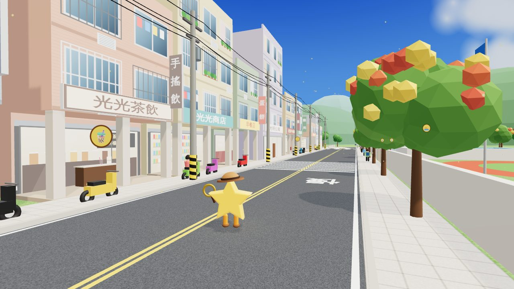
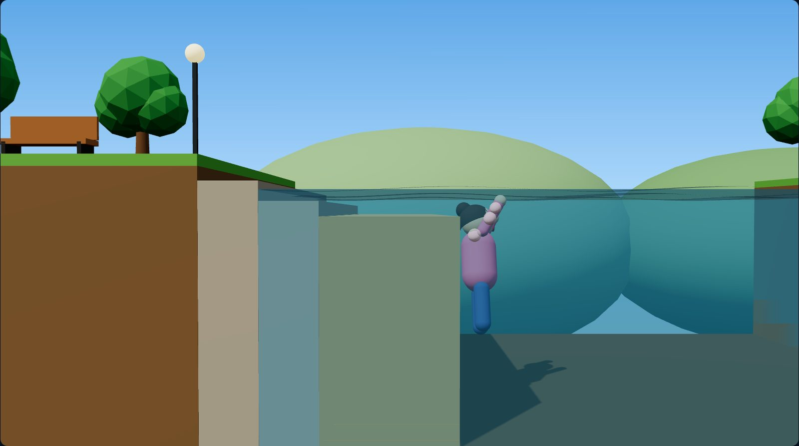
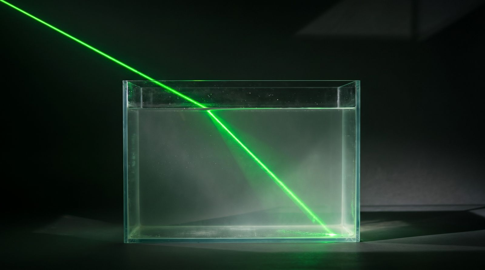
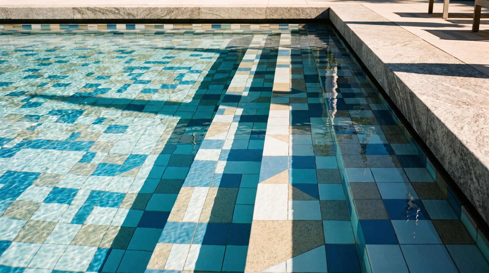

🏙️ 光線小鎮・折射任務（3D）吸管・硬幣・游泳池・竹東溪撈魚・一滴水 📖 折射偵探事件簿吸管懸案・光的規則・硬幣魔術・生活案件
📺 光線新聞台看新聞練習：仰漂獲救（3D）
🎵 MV〈折一下 Snap!〉全班一起彈指唱 🥤 折射實驗室六站：吸管・硬幣・光線・生活・撈硬幣
🚆 折射環島搶答台灣地圖・兩隊搶站每一頁右上角都有「🗂️ 主選單」，左上角「⬅ 返回」回上一頁。上課照日期走，請從主選單進入。